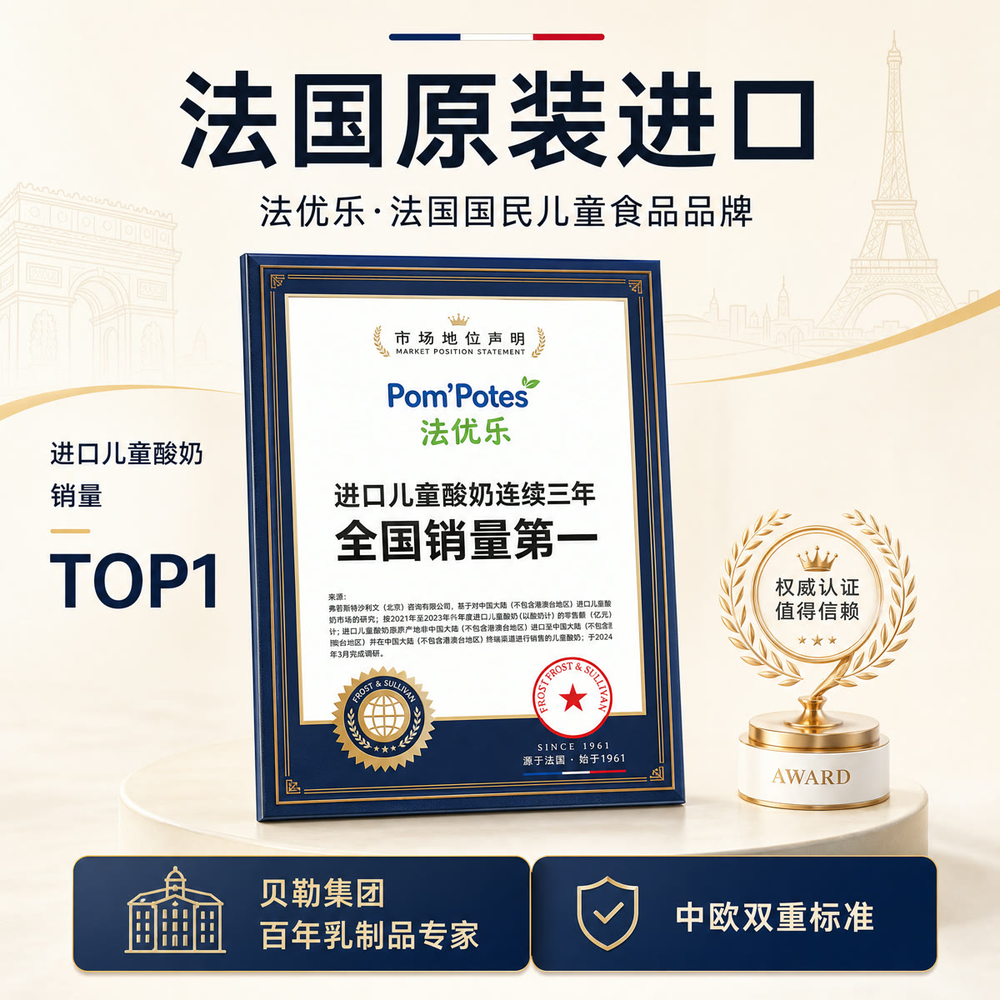

从一条真实需求，做到可交付的设计。
先给产品原图、批准文案和参考图，确认用途、尺寸与风格。在交付负责人配置好的企业入口开始；已开通模块和操作权限，以本次交付清单为准。
AI 作图
带来什么：用自然语言说清需求，完成常规电商视觉制作（包含brief需求解析-视觉编码-品牌调性调用-视觉qa检测-输出及建议-数据落盘），并支持在同一任务里继续修改。
适合：运营、品牌和设计师制作上新主图、活动海报、Banner、KV，或修改已有图片。
- 给材料：上传对应 SKU 的清晰产品图、最终文案和参考图（无参考图亦可通过品牌调性生成商用视觉），说明参考的是配色、构图还是氛围等；填好的需求单也可直接提供；。
- 说需求：说明用途、尺寸、张数和风格；核对系统整理出的产品信息及文案。
- 看图改图：指出要修改的位置，选定版本后检查产品、Logo、文字与尺寸，再下载或按项目约定归档。
可以直接这样说：“用我上传的产品原图做一张天猫上新主图，尺寸 1200×1200，文案只用附件里的最终版；参考图只参考配色和布局，产品包装不要改。先出一版给我看。”

品牌规范
带来什么：把品牌调性和素材规则配置一次，后续制作可以持续调用，减少每次从头解释。
适合：同一品牌持续上新、多 SKU 制作，以及运营和设计多人协作。
- 交品牌资料：提供 Logo、品牌规范、产品包装、获准使用的历史物料和喜欢的参考，明确哪些是产品原件、哪些只作风格参考。
- 确认品牌基线：核对受众、色彩、构图、文字层级、分场景风格和不可改动的产品信息，确认后保存使用。
- 后续调用：新任务说明品牌和应用场景，补充当前 SKU、文案及变化项；素材或规范更新后先同步基线，再继续生产。
可以直接这样说：“继续用已经确认的品牌调性，这次做新品海报。产品图和文案以本次附件为准，旧图只参考视觉，不沿用旧年份、价格和活动信息。”
使用说明：品牌规则随客户配置，在已部署的视觉入口调用。工作基线需由品牌或业务负责人审阅；风格一致性与产品、文案正确性分别核对。
AI 详情页
带来什么：从产品事实出发，可自动优化卖点、规划详情页逻辑、逐屏布局和多版 KV选稿，确认方向后继续制作内页与整页；每页视觉上下连贯性、趣味性相比市面上的agent更强。
适合：电商新品详情页、已有页面改版，以及需要统一卖点和视觉的品牌、运营与设计团队。
- 确认内容：提交产品资料、准确文案、平台要求和参考页，核对购买疑问、卖点优化、逐屏内容与线框布局。
- 选择方向：查看三版 KV，选定其中一个方向并确认需修改的问题；有授权 IP 素材时，可规划产品与 IP 的互动。
- 制作验收：按选定方向制作内页，逐屏确认后检查整页阅读、文字、商品形态、上下屏衔接和平台规格，再导出交付。
可以直接这样说：“给个链接/文案卖点，为这款产品制作天猫详情页。
它会给你：可以帮你优化卖点，给你逐屏文案和线框，再做三版 KV供你选择；你选定方向后继续内页设计，最后统一检查整页。可按你要求输出完整页面”
使用说明：重点能力为自动卖点优化、布局规划、多 KV 定稿、IP 互动和更自然的上下屏连接；不保证所有画面必然无缝连接。

设计师精修
带来什么：AI 制作后仍需微调的细节，连同需求和过程一起整理归档交给设计师，减少重复说明、沟通成本。
适合：包装和文字精修、较高视觉要求、局部细节多次调整，或业务方希望设计师继续加工的任务。
- 圈定问题：选出要继续修改的版本，说明保留什么、改哪里、以什么原图和文案为准。
- 整理交接：让 Agent 汇总产品素材、确认需求、当前候选、修改记录和未解决问题，预览人工提单内容。
- 提单跟进：确认提单内容后提交，查看返回的单号或记录；按已配置的流程确认承接人、排期及最终精修稿。
可以直接这样说：“保留这个版本的构图，把酒标、包装小字和这两处细节交给设计师精修。请整理最终文案、产品原图、当前图和修改过程，先给我看提单预览，确认后再提交。”
使用说明：依赖已配置的提单表单、权限与归档位置；飞书、钉钉、企微入口按客户项目适配。资料整理、提交成功、设计师接单和最终交付是不同节点，提交后按回执查单，避免重复提交。
设计需求管理
带来什么：把需求、责任人、排期、产出、工时和费用放在同一套记录里，查看部门与店铺的设计成本；内置AI交付图评分系统、自动分发系统、数据看板等。
适合：有持续需求和设计团队的企业，供运营查单、设计师协作、管理者安排资源与核对费用。
- 统一提报：按企业入口提供需求品类、平台／店铺、数量、素材、优先级和期望日期，确认成本归属。
- 查看执行：按已配置的能力和负载规则分发任务，在任务视图检查承接人、状态、排期与修改情况。
- 核对结果：交付后关联最终稿，核对实际工时、费用与部门／店铺归属，在授权看板里查看产出和成本。
使用说明：需要飞书、钉钉或企业微信等办公平台基础，字段、派单、价格规则与权限按企业配置。实施参考为 1–2 周，来源为已核对产品包；截图只证明现有入口，不作为本次新派单或结算验证。
图片分层
带来什么：把一张平面候选按参考图重建为可继续编辑的 PSD，让设计师单独修改文字与图像元素。
适合：设计师对已经选定的视觉继续改字、移动产品或装饰、调整局部构图；当前由负责人确认样例与开通条件。
- 明确拆分：提交清晰原图、最终文案、字体与品牌素材，说明哪些文字或元素必须独立可编辑。
- 重建图层：由负责人在当前支持的环境中完成文字识别、图像元素重建与 PSD 合成，核对重建后的内容。
- 打开检查：在 Photoshop 中检查文字、图层、透明区域和整体预览，实际改字或移动元素后，按约定范围验收。
它按参考重建图层，不恢复原作者真实图层，也不保证像素级一致；包装微字、复杂 Logo 和背景按素材分别处理。可编辑范围和运行条件由交付负责人确认。
准备材料，配置试跑，再共同核对。
- 指定业务与验收负责人，准备产品原图、批准文案、品牌材料、参考图和常用尺寸，确认账号与办公平台条件。
- 按选定范围配置视觉入口、品牌规则和人工提单，带团队用一条代表性需求跑完整流程。
- 核对产品、文案、品牌风格和规格，检查下载、归档与提单回执；需要设计管理的，再核对承接人、排期和费用归属。
- 交接已配置入口、使用方法和维护约定，留下确认后的产品视觉；详情页和 PSD 按约定范围交付。
常见问题
1. 不会写提示词，也能用吗？
可以，提供产品图、文案和参考，用日常语言说清用途、尺寸和风格，填好的需求单也可以直接读。结果不满意时，继续说明具体要改的位置。
2. 有 AI 了，还需要设计师吗？
建议需要，常规图可由运营用 AI 先做，创意判断和精细调整可由设计师继续完成。需求、素材与修改过程一起交接，设计师不用从头问一遍。
3. 能做整套详情页吗？
可以，先确认文案和布局，再从三版 KV 中选定方向，继续制作内页与整页检查。支持 IP 互动和更自然的跨屏衔接，不保证所有上下屏一定无缝连接。
4. 能交可编辑 PSD 吗？
已有本机重建样例，当前先由交付负责人确认素材、可编辑范围和运行条件。PSD 按参考图重建，不能视为无损恢复原始设计文件。
5. 能保证点击、转化和商用版权吗？
不保证点击转化提升或零版权风险，商用前由客户核对产品事实、文案、字体和素材授权。车企 CG、三维模型、网页 UI／UX、大型矢量不在当前常规范围，海外市场视觉需另行调优确认。